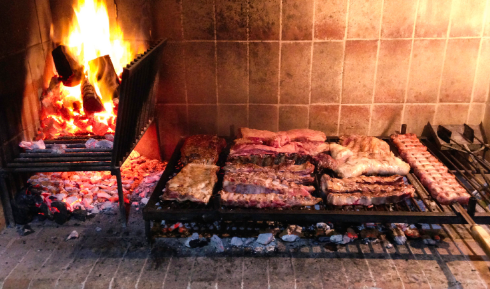
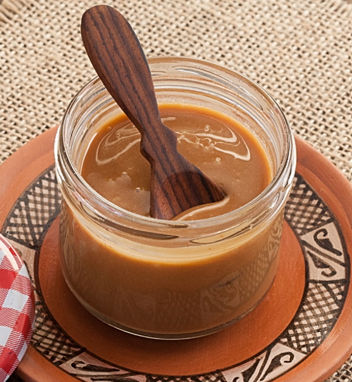

Food of Argentina
One of the things Argentina is famous for it its food. Most of the people in Argentina are meat- eaters hencethe staple food or the most eaten food in Argentina is grilled meat. The grilled meat, also known as ‘Asado’, in Argentina is made on an open fire which is called ‘Parrilla’.

Some of the other cuisines of Argentina include:
1. Dulche De Leche:
This sauce has a sweet, butterscotch-like flavour. It is made by heating sweet/condensed milk until it becomes thick. Unlike caramel, this is heated slowly with a low flame. It has a smooth texture and a toffee like taste. Dulce de leche is spanish for ‘sweet made of milk’ and also know as condensed/caramel milk in english.It can be used as a side sauce or even at a topping of filling in cookies, cakes, etc. Dulce de leche can be bought even outside Argentina. It can be bought in supermarkets like Target and Walmart. It can also be bought online.
2. Provoleta
This dish is made of melted cheese and is served with a variety of toppings.
 It is usually served with bread and chimichurri as an appetizer. It can also be eaten with salad and incorporated into desserts. The traditional way to make this dish is to cook it directly above the fire and leave it uncovered for a few hours, preferably overnight. The cheese was first made in 1940 after they found out how to keep the outer part from melting while the interior is melted.
It is usually served with bread and chimichurri as an appetizer. It can also be eaten with salad and incorporated into desserts. The traditional way to make this dish is to cook it directly above the fire and leave it uncovered for a few hours, preferably overnight. The cheese was first made in 1940 after they found out how to keep the outer part from melting while the interior is melted.
3. Chimichurri
It is a sauce made of parsley, oregano, garlic, onion, olive oil, chilli pepper flakes.
It comes in green and red variety. It is often eaten with steak like fish, chicken or beef. It is also served with Provoleta and Asado. It can also be smeared on meat either when it is being cooked or resting. Chimichurri is best to eat right after it is made but it can also be kept in the fridge. It can also be mixed with yogurt to create a dip. There are several myths about the creation of chimichurri and its name, yet its
 exact origin is unknown. Some assert that gauchos devised it to taste meat cooked over open flames, while others assert that Basque immigration is the source of its invention. Another tale is that Jimmy McCurry, an Irish or Englishman who was either a meat seller or a freedom fighter, invented it.
exact origin is unknown. Some assert that gauchos devised it to taste meat cooked over open flames, while others assert that Basque immigration is the source of its invention. Another tale is that Jimmy McCurry, an Irish or Englishman who was either a meat seller or a freedom fighter, invented it.